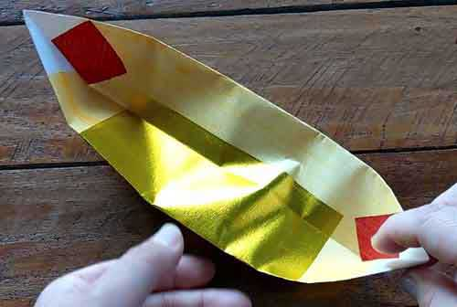

Terms & Definitions
yeeb kum ceeb kuam


These represent the gold ingots which were used as currency in ancient china.
Swm Ntawv
The paper money you cut up into patterns with the half circle chisel ( image here)
Plooj Xov Txheej
These are the individual sheets
Tuaj Yom - When you move your hand forward and back, example when offer a drink to the deceased
ntshuas ntawv - A bushel of money paper. For example the paper money that the daugther carries to ua qhua.
phig tsha - is only the meat used to sawv thawv. It is given to the txiv qeej. It is the matching meat from the sawv thawv cows.
The meat is the leanest part of the cow with no bones. Not ribs
This is the meat the txiv qeej give to the people they asked to help
has nkauj, ntau ruag, hab tsuab qeej
tsaj ntag nub - During a funeral, these are the cows others have contributed to help the funeral and family of the deceases
nyuj ntag mo - During the funeral these are the cows required cows for the job positions and use to sawv thawv
paaj qeeg - During a funeral these are the Verses used during the ncej xub qeeg event.
Hab paaj qeeg rua cov tuaj ua qhua lug txai puab lub txaj lub tsiw
zaaj nkauj - During a funeral these are the verses used when phig tsha